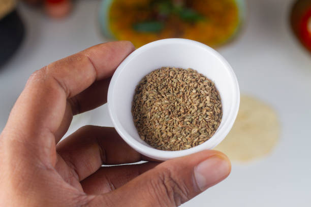
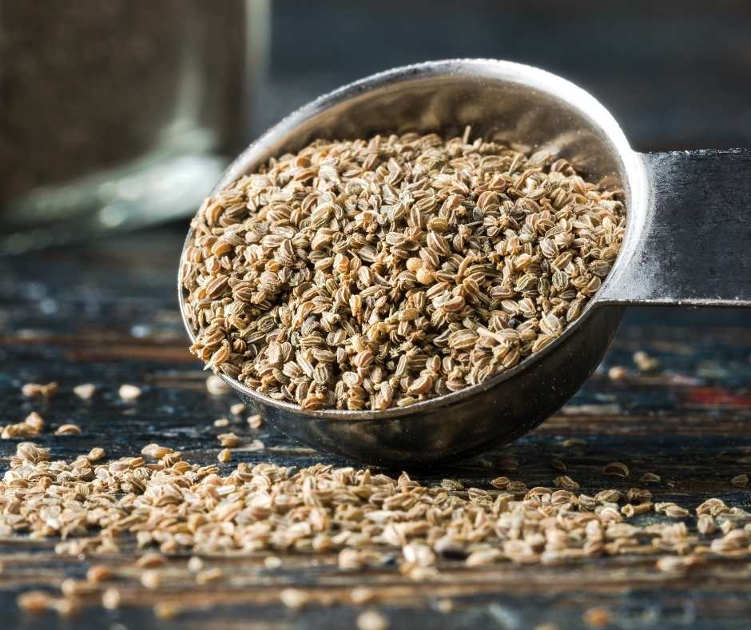
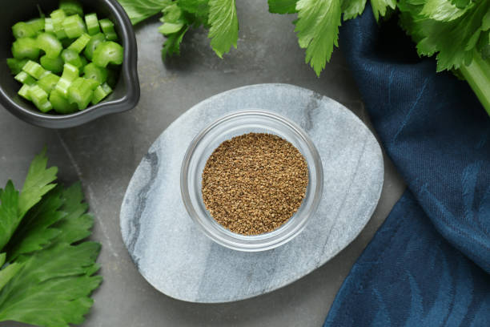

Welcome

Celery seed: a versatile natural ingredient
Celery seed is a small, aromatic seed used in cooking and wellness products. It has a stronger, more concentrated flavor than fresh celery and so is used in spice mixtures and savory preparations. It's easy to use dried celery in many recipe applications because it's easy to reconstitute to store and measure celery seed is a familiar substance in the home kitchen.

Culinary uses of celery seed
Celery seed is frequently used as a spice or added to soup mixes and salads. It provides a savory taste with a slightly bitter "celery-like" flavor without the addition of moisture. A small amount goes a long distance in the recipe. There are recipes Often, small quantities are required as a flavour enhancer in coleslaw, potato salad, marinade, etc.
Commonly discussed benefits
Some people also look up information about celery seed because of its association in some wellness topics. It is also noted for containing plant-based compounds studied for their possible uses in supporting the digestive and inflammatory systems. However, with respect to a web page used for personal web marketing, the critical factor is to not extend your claims too far. For instance, suggest its applications that are "commonly discussed readers to check product labels to be sure:

Celery seed extract and products
Beyond the spice bottle, celery seed is also available in various extracts, in capsule form, and as a component of various blends. Extract products are sold for convenience and consistent dosing, but the spice form allows an individual to use it according to one's recipe. If you are comparing products, Look for ingredient lists, serving size, and any potential allergy warnings.